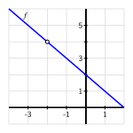
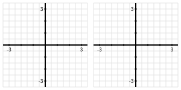

What is the mathematical notion of limit and what role do limits play in the study of functions?
What is the meaning of the notation \(\lim_{x \to a} f(x) = L\text{?}\)
How do we go about determining the value of the limit of a function at a point?
How do we manipulate average velocity to compute instantaneous velocity?
In Section 1.1 we used a function, \(s(t)\text{,}\) to model the location of a moving object at a given time. Functions can model other interesting phenomena, such as the rate at which an automobile consumes gasoline at a given velocity, or the reaction of a patient to a given dosage of a drug. We can use calculus to study how a function value changes in response to changes in the input variable.
Think about the falling ball whose position function is given by \(s(t) = 64 - 16t^2\text{.}\) Its average velocity on the interval \([1,x]\) is given by
Note that the average velocity is a function of \(x\text{.}\) That is, the function \(g(x) = \frac{16 - 16x^2}{x-1}\) tells us the average velocity of the ball on the interval from \(t = 1\) to \(t = x\text{.}\) To find the instantaneous velocity of the ball when \(t = 1\text{,}\) we need to know what happens to \(g(x)\) as \(x\) gets closer and closer to \(1\text{.}\) But also notice that \(g(1)\) is not defined, because it leads to the quotient \(0/0\text{.}\)
This is where the notion of a limit comes in. By using a limit, we can investigate the behavior of \(g(x)\) as \(x\) gets arbitrarily close, but not equal, to \(1\text{.}\) We first use the graph of a function to explore points where interesting behavior occurs.
Preview Activity1.2.1.
Subsection1.2.1The Notion of Limit
Limits give us a way to identify a trend in the values of a function as its input variable approaches a particular value of interest. We need a precise understanding of what it means to say “a function \(f\) has limit \(L\) as \(x\) approaches \(a\text{.}\)” To begin, think about a recent example.
In [cross-reference to target(s) "PA-1-2" missing or not unique], we saw that as \(x\) gets closer and closer (but not equal) to 0, \(g(x)\) gets as close as we want to the value 4. At first, this may feel counterintuitive, because the value of \(g(0)\) is \(1\text{,}\) not \(4\text{.}\) But limits describe the behavior of a function arbitrarily close to a fixed input, and the value of the function at the fixed input does not matter. More formally, 1
What follows here is not what mathematicians consider the formal definition of a limit. To be completely precise, it is necessary to quantify both what it means to say “as close to \(L\) as we like” and “sufficiently close to \(a\text{.}\)” That can be accomplished through what is traditionally called the epsilon-delta definition of limits. The definition presented here is sufficient for the purposes of this text.
we say the following.
Definition1.2.1.
Given a function \(f\text{,}\) a fixed input \(x = a\text{,}\) and a real number \(L\text{,}\) we say that \(f\) has limit \(L\) as \(x\) approaches \(a\), and write
\begin{equation*}
\lim_{x \to a} f(x) = L
\end{equation*}
provided that we can make \(f(x)\) as close to \(L\) as we like by taking \(x\) sufficiently close (but not equal) to \(a\text{.}\) If we cannot make \(f(x)\) as close to a single value as we would like as \(x\) approaches \(a\text{,}\) then we say that \(f\) does not have a limit as \(x\) approaches \(a\text{.}\)
Example1.2.2.
For the function \(g\) pictured in [cross-reference to target(s) "F-1-2-PA1" missing or not unique], we make the following observations:
When working from a graph, it suffices to ask if the function approaches a single value from each side of the fixed input. The function value at the fixed input is irrelevant. This reasoning explains the values of the three limits stated above.
However, \(g\) does not have a limit as \(x \to 1\text{.}\) There is a jump in the graph at \(x = 1\text{.}\) If we approach \(x = 1\) from the left, the function values tend to get close to 3, but if we approach \(x = 1\) from the right, the function values get close to 2. There is no single number that all of these function values approach. This is why the limit of \(g\) does not exist at \(x = 1\text{.}\)
For any function \(f\text{,}\) there are typically three ways to answer the question “does \(f\) have a limit at \(x = a\text{,}\) and if so, what is the limit?” The first is to reason graphically as we have just done with the example from [cross-reference to target(s) "PA-1-2" missing or not unique]. If we have a formula for \(f(x)\text{,}\) there are two additional possibilities:
Evaluate the function at a sequence of inputs that approach \(a\) on either side (typically using some sort of computing technology), and ask if the sequence of outputs seems to approach a single value.
Use the algebraic form of the function to understand the trend in its output values as the input values approach \(a\text{.}\)
The first approach produces only an approximation of the value of the limit, while the latter can often be used to determine the limit exactly.
Example1.2.3.Limits of Two Functions.
For each of the following functions, we’d like to know whether or not the function has a limit at the stated \(a\)-values. Use both numerical and algebraic approaches to investigate and, if possible, estimate or determine the value of the limit. Compare the results with a careful graph of the function on an interval containing the points of interest.
a. We first construct a graph of \(f\) along with tables of values near \(a = -1\) and \(a = -2\text{.}\)
\(x\)
\(f(x)\)
\(-0.9\)
\(2.9\)
\(-0.99\)
\(2.99\)
\(-0.999\)
\(2.999\)
\(-0.9999\)
\(2.9999\)
\(-1.1\)
\(3.1\)
\(-1.01\)
\(3.01\)
\(-1.001\)
\(3.001\)
\(-1.0001\)
\(3.0001\)
Table1.2.4.Table of \(f\) values near \(x=-1\text{.}\)
\(x\)
\(f(x)\)
\(-1.9\)
\(3.9\)
\(-1.99\)
\(3.99\)
\(-1.999\)
\(3.999\)
\(-1.9999\)
\(3.9999\)
\(-2.1\)
\(4.1\)
\(-2.01\)
\(4.01\)
\(-2.001\)
\(4.001\)
\(-2.0001\)
\(4.0001\)
Table1.2.5.Table of \(f\) values near \(x=-2\text{.}\)
Figure1.2.6.Plot of \(f(x)\) on \([-4,2]\text{.}\)
From Table 1.2.4, it appears that we can make \(f\) as close as we want to 3 by taking \(x\) sufficiently close to \(-1\text{,}\) which suggests that \(\lim_{x \to -1} f(x) = 3\text{.}\) This is also consistent with the graph of \(f\text{.}\) To see this a bit more rigorously and from an algebraic point of view, consider the formula for \(f\text{:}\)\(f(x) = \frac{4-x^2}{x+2}\text{.}\) As \(x \to -1\text{,}\)\((4-x^2) \to (4 - (-1)^2) = 3\text{,}\) and \((x+2) \to (-1 + 2) = 1\text{,}\) so as \(x \to -1\text{,}\) the numerator of \(f\) tends to 3 and the denominator tends to 1, hence \(\lim_{x \to -1} f(x) = \frac{3}{1} = 3\text{.}\)
The situation is more complicated when \(x \to -2\text{,}\) because \(f(-2)\) is not defined. If we try to use a similar algebraic argument regarding the numerator and denominator, we observe that as \(x \to -2\text{,}\)\((4-x^2) \to (4 - (-2)^2) = 0\text{,}\) and \((x+2) \to (-2 + 2) = 0\text{,}\) so as \(x \to -2\text{,}\) the numerator and denominator of \(f\) both tend to 0. We call \(0/0\) an indeterminate form. This tells us that there is somehow more work to do. From Table 1.2.5 and Figure 1.2.6, it appears that \(f\) should have a limit of \(4\) at \(x = -2\text{.}\)
To see algebraically why this is the case, observe that
It is important to observe that, since we are taking the limit as \(x \to -2\text{,}\) we are considering \(x\) values that are close, but not equal, to \(-2\text{.}\) Because we never actually allow \(x\) to equal \(-2\text{,}\) the quotient \(\frac{2+x}{x+2}\) has value 1 for every possible value of \(x\text{.}\) Thus, we can simplify the most recent expression above, and find that
This limit is now easy to determine, and its value clearly is \(4\text{.}\) Thus, from several points of view we’ve seen that \(\lim_{x \to -2} f(x) = 4\text{.}\)
b. Next we turn to the function \(g\text{,}\) and construct two tables and a graph.
\(x\)
\(g(x)\)
\(2.9\)
\(0.88351\)
\(2.99\)
\(0.86777\)
\(2.999\)
\(0.86620\)
\(2.9999\)
\(0.86604\)
\(3.1\)
\(0.84864\)
\(3.01\)
\(0.86428\)
\(3.001\)
\(0.86585\)
\(3.0001\)
\(0.86601\)
Table1.2.7.Table of \(g\) values near \(x=3\text{.}\)
\(x\)
\(g(x)\)
\(-0.1\)
\(0\)
\(-0.01\)
\(0\)
\(-0.001\)
\(0\)
\(-0.0001\)
\(0\)
\(0.1\)
\(0\)
\(0.01\)
\(0\)
\(0.001\)
\(0\)
\(0.0001\)
\(0\)
Table1.2.8.Table of \(g\) values near \(x=0\text{.}\)
Figure1.2.9.Plot of \(g(x)\) on \([-4,4]\text{.}\)
First, as \(x \to 3\text{,}\) it appears from the table values that the function is approaching a number between \(0.86601\) and \(0.86604\text{.}\) From the graph it appears that \(g(x) \to g(3)\) as \(x \to 3\text{.}\) The exact value of \(g(3) = \sin(\frac{\pi}{3})\) is \(\frac{\sqrt{3}}{2}\text{,}\) which is approximately 0.8660254038. This is convincing evidence that
As \(x \to 0\text{,}\) we observe that \(\frac{\pi}{x}\) does not behave in an elementary way. When \(x\) is positive and approaching zero, we are dividing by smaller and smaller positive values, and \(\frac{\pi}{x}\) increases without bound. When \(x\) is negative and approaching zero, \(\frac{\pi}{x}\) decreases without bound. In this sense, as we get close to \(x = 0\text{,}\) the inputs to the sine function are growing rapidly, and this leads to increasingly rapid oscillations in the graph of \(g\) betweem \(1\) and \(-1\text{.}\) If we plot the function \(g(x) = \sin\left(\frac{\pi}{x}\right)\) with a graphing utility and then zoom in on \(x = 0\text{,}\) we see that the function never settles down to a single value near the origin, which suggests that \(g\) does not have a limit at \(x = 0\text{.}\)
How do we reconcile the graph with the righthand table above, which seems to suggest that the limit of \(g\) as \(x\) approaches \(0\) may in fact be \(0\text{?}\) The data misleads us because of the special nature of the sequence of input values \(\{0.1, 0.01, 0.001, \ldots\}\text{.}\) When we evaluate \(g(10^{-k})\text{,}\) we get \(g(10^{-k}) = \sin\left(\frac{\pi}{10^{-k}}\right) = \sin(10^k \pi) = 0\) for each positive integer value of \(k\text{.}\) But if we take a different sequence of values approaching zero, say \(\{0.3, 0.03, 0.003, \ldots\}\text{,}\) then we find that
That sequence of function values suggests that the value of the limit is \(\frac{\sqrt{3}}{2}\text{.}\) Clearly the function cannot have two different values for the limit, so \(g\) has no limit as \(x \to 0\text{.}\)
An important lesson to take from Example 1.2.3 is that tables can be misleading when determining the value of a limit. While a table of values is useful for investigating the possible value of a limit, we should also use other tools to confirm the value.
Activity1.2.2.
Estimate the value of each of the following limits by constructing appropriate tables of values. Then determine the exact value of the limit by using algebra to simplify the function. Finally, plot each function on an appropriate interval to check your result visually.
Recall that our primary motivation for considering limits of functions comes from our interest in studying the rate of change of a function. To that end, we close this section by revisiting our previous work with average and instantaneous velocity and highlighting the role that limits play.
Subsection1.2.2Instantaneous Velocity
Suppose that we have a moving object whose position at time \(t\) is given by a function \(s\text{.}\) We know that the average velocity of the object on the time interval \([a,b]\) is \(AV_{[a,b]} = \frac{s(b)-s(a)}{b-a}\text{.}\) We define the instantaneous velocity at \(a\) to be the limit of average velocity as \(b\) approaches \(a\text{.}\) Note particularly that as \(b \to a\text{,}\) the length of the time interval gets shorter and shorter (while always including \(a\)). We will write \(IV_{t=a}\) for the instantaneous velocity at \(t = a\text{,}\) and thus
Equivalently, if we think of the changing value \(b\) as being of the form \(b = a + h\text{,}\) where \(h\) is some small number, then we may instead write
Again, the most important idea here is that to compute instantaneous velocity, we take a limit of average velocities as the time interval shrinks.
Activity1.2.3.
Consider a moving object whose position function is given by \(s(t) = t^2\text{,}\) where \(s\) is measured in meters and \(t\) is measured in minutes.
Determine the most simplified expression for the average velocity of the object on the interval \([3, 3+h]\text{,}\) where \(h \gt 0\text{.}\)
Determine the average velocity of the object on the interval \([3,3.2]\text{.}\) Include units on your answer.
Determine the instantaneous velocity of the object when \(t = 3\text{.}\) Include units on your answer.
The closing activity of this section asks you to make some connections among average velocity, instantaneous velocity, and slopes of certain lines.
Activity1.2.4.
For the moving object whose position \(s\) at time \(t\) is given by the graph in Figure 1.2.10, answer each of the following questions. Assume that \(s\) is measured in feet and \(t\) is measured in seconds.
Figure1.2.10.Plot of the position function \(y = s(t)\) in Activity 1.2.4.
Use the graph to estimate the average velocity of the object on each of the following intervals: \([0.5,1]\text{,}\)\([1.5,2.5]\text{,}\)\([0,5]\text{.}\) Draw each line whose slope represents the average velocity you seek.
How could you use average velocities or slopes of lines to estimate the instantaneous velocity of the object at a fixed time?
Use the graph to estimate the instantaneous velocity of the object when \(t = 2\text{.}\) Should this instantaneous velocity at \(t = 2\) be greater or less than the average velocity on \([1.5,2.5]\) that you computed in (a)? Why?
Subsection1.2.3Summary
Limits enable us to examine trends in function behavior near a specific point. In particular, taking a limit at a given point asks if the function values nearby tend to approach a particular fixed value.
We read \(\lim_{x \to a} f(x) = L\text{,}\) as “the limit of \(f\) as \(x\) approaches \(a\) is \(L\text{,}\)” which means that we can make the value of \(f(x)\) as close to \(L\) as we want by taking \(x\) sufficiently close (but not equal) to \(a\text{.}\)
To find \(\lim_{x \to a} f(x)\) for a given value of \(a\) and a known function \(f\text{,}\) we can estimate this value from the graph of \(f\text{,}\) or we can make a table of function values for \(x\)-values that are closer and closer to \(a\text{.}\) If we want the exact value of the limit, we can work with the function algebraically to understand how different parts of the formula for \(f\) change as \(x \to a\text{.}\)
We find the instantaneous velocity of a moving object at a fixed time by taking the limit of average velocities of the object over shorter and shorter time intervals containing the time of interest.
Exercises1.2.4Exercises
1.Evaluating a limit using a graph.
2.Evaluating a limit algebraically.
3.
Consider the function whose formula is \(f(x) = \frac{16-x^4}{x^2-4}\text{.}\)
What is the domain of \(f\text{?}\)
Use a sequence of values of \(x\) near \(a = 2\) to estimate the value of \(\lim_{x \to 2} f(x)\text{,}\) if you think the limit exists. If you think the limit doesn’t exist, explain why.
Use algebra to simplify the expression \(\frac{16-x^4}{x^2-4}\) and hence work to evaluate \(\lim_{x \to 2} f(x)\) exactly, if it exists, or to explain how your work shows the limit fails to exist. Discuss how your findings compare to your results in (b).
True or false: \(f(2) = -8\text{.}\) Why?
True or false: \(\frac{16-x^4}{x^2-4} = -4-x^2\text{.}\) Why? How is this equality connected to your work above with the function \(f\text{?}\)
Based on all of your work above, construct an accurate, labeled graph of \(y = f(x)\) on the interval \([1,3]\text{,}\) and write a sentence that explains what you now know about \(\lim_{x \to 2} \frac{16-x^4}{x^2-4}\text{.}\)
4.
Let \(g(x) = -\frac{|x+3|}{x+3}\text{.}\)
What is the domain of \(g\text{?}\)
Use a sequence of values near \(a = -3\) to estimate the value of \(\lim_{x \to -3} g(x)\text{,}\) if you think the limit exists. If you think the limit doesn’t exist, explain why.
Use algebra to simplify the expression \(\frac{|x+3|}{x+3}\) and hence work to evaluate \(\lim_{x \to -3} g(x)\) exactly, if it exists, or to explain how your work shows the limit fails to exist. Discuss how your findings compare to your results in (b). (Hint: \(|a| = a\) whenever \(a \ge 0\text{,}\) but \(|a| = -a\) whenever \(a \lt 0\text{.}\))
True or false: \(g(-3) = -1\text{.}\) Why?
True or false: \(-\frac{|x+3|}{x+3} = -1\text{.}\) Why? How is this equality connected to your work above with the function \(g\text{?}\)
Based on all of your work above, construct an accurate, labeled graph of \(y = g(x)\) on the interval \([-4,-2]\text{,}\) and write a sentence that explains what you now know about \(\lim_{x \to -3} g(x)\text{.}\)
5.
For each of the following prompts, sketch a graph on the provided axes of a function that has the stated properties.

Figure1.2.11.Axes for plotting \(y = f(x)\) in (a) and \(y = g(x)\) in (b).
\(y = f(x)\) such that
\(f(-2) = 2\) and \(\lim_{x \to -2} f(x) = 1\)
\(f(-1) = 3\) and \(\lim_{x \to -1} f(x) = 3\)
\(f(1)\) is not defined and \(\lim_{x \to 1} f(x) = 0\)
\(f(2) = 1\) and \(\lim_{x \to 2} f(x)\) does not exist.
At \(x = -2, -1, 1\) and \(2\text{,}\)\(g\) has a limit, and its limit equals the value of the function at that point.
\(g(0)\) is not defined and \(\lim_{x \to 0} g(x)\) does not exist.
6.
A bungee jumper dives from a tower at time \(t=0\text{.}\) Her height \(s\) in feet at time \(t\) in seconds is given by \(s(t) = 100\cos(0.75t) \cdot e^{-0.2t}+100\text{.}\)
Write an expression for the average velocity of the bungee jumper on the interval \([1,1+h]\text{.}\)
Use computing technology to estimate the value of the limit as \(h \to 0\) of the quantity you found in (a).
What is the meaning of the value of the limit in (b)? What are its units?